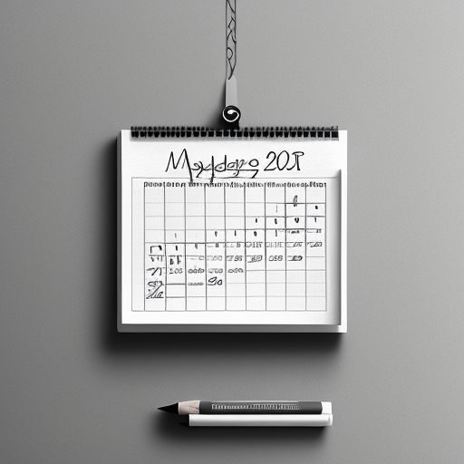

Features
Scrumptious Recipes
Indulge in a delightful culinary experience with these mouthwatering, flavor-packed recipes that are sure to tantalize your taste buds.

Nutritional Analysis
Understand the nutritional value of your meals with the ingredients list.

Shopping List
Plan your shopping list according to the recipes.

Meal Planning
Plan your meals for the week effortlessly.